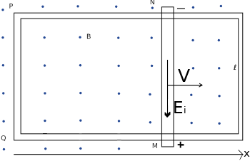

Origin of the induced ℰi
In Faraday’s law of magnetic induction eq. 6.1.1., two possible scenarios can arise for the production of a magnetic flux:
A conductor moves in a reference frame in which the source of the magnetic field is stationary.
A time varying magnetic field in a reference frame in which the conductor is stationary.
Case a). Consider a straight conductor of length ℓ, moving with constant velocity, v through a uniform magnetic field directed into the paper, as in Figure 20.15.
For simplicity, we assume the conductor moves in a direction perpendicular to a constant and uniform magnetic field, B, with the moving conductor part of a closed conducting path. If the electrons in the conductor move with speed v a magnetic force of magnitude F = −ev x B is directed downward, acts on the electrons in the conductor. Thus we can define an electromotive field
Ei = F/−e = v x B
The circutation of Ei along the closed conducting path MNPQ is
in which the only contribution is that of the moving part (v ≠ 0).
The flux of the magnetic field is
Φ(B) = ∫ B ⋅ un dΣ = Bℓx
By Faraday's law we have
Though we analyzed a simple case, more complicated circuit arrangements would lead to the same conclusions:
When an element of a conducting material moves in a region with a uniform and constant magnetic field, within the conductor a separation of charges occurs, caused by an electromor induced field, Ei, which originates in the Lorentz Force.
b). We examine the next case: the circuit is fixed and the magnetic field varying in time. Since the velocity of electrons is null, the magnetic force F = −qv x B would be null as well. Since the force acting on a charge is given by: F = −e(E + v x B). As a consequence we must suppose that in a region in which the magnetic field varies in time there must be an induced electric field Ei whose circutation is
It is highly significant to understand that this induced electric field exists indipendently on the presence of a conductor.
If we consider a circular conducting path, the magnetic flux is
Φ(B) = ∫ B ⋅ un dΣ = Bm π r2
assuming B perpendicular to the conductor plane, with Bm the mean magnetic field inside the plane. We know that Ei is perpendicular to the plane with modulus equal at each instant in all points of the conductor plane. Then we have
Beatron
We have discussed that a time changing magnetic field produces an electric field, Ei. This fact is used for accelerating an electron and the device is called betatron. In ta beatron electron are accelerated by a tangential force on a electron due to Ei induced by the time-changing magnetic field. The magnetic field is produced by an A.C. electromagnet with iron core.
Fi = e Ei
This electron in maintained in a circular path by the Lorentz force FL. The rotation occurs with angular velocity ω = −(e/m)Br, equidirectional to the magnetic field B.